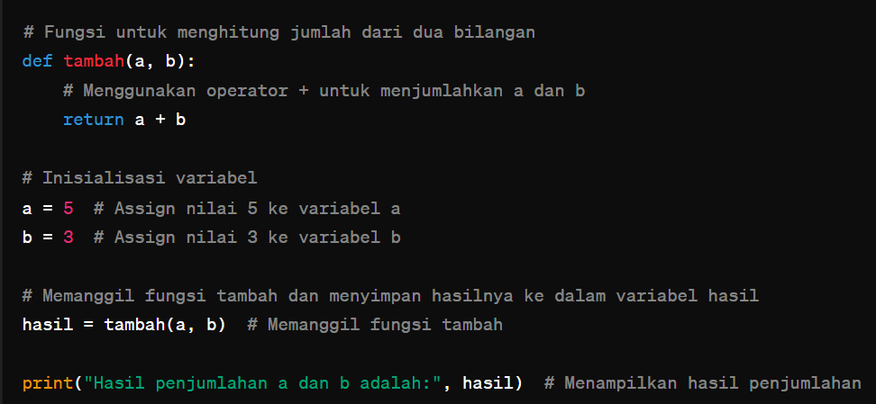

Komentar dalam kode adalah alat yang sangat berguna untuk menjelaskan tujuan
atau fungsi dari bagian-bagian kode yang kompleks. Namun dalam beberapa kasus,
komentar juga dapat menjadi tanda adanya "Bad Code Smell". Beberapa kasus di mana
komentar dapat menjadi bad code smell adalah sebagai berikut :
1. Komentar yang menjelaskan hal yang seharusnya jelas dari kode itu sendiri :
Jika kode sudah cukup jelas dalam menjelaskan apa yang
dilakukannya, tambahan komentar yang menjelaskan dengan detail
bisa jadi tanda bahwa kode tersebut tidak ditulis dengan baik.
2. Komentar yang usang atau tidak terkini :
Komentar yang tidak diperbarui ketika kode berubah dapat menyesatkan. Misalnya, komentar
yang menjelaskan algoritma yang sudah diubah tanpa mengubah komentar itu sendiri.
3. Komentar yang tidak relevan atau tidak bermanfaat :
Komentar yang hanya berisi informasi umum atau tidak relevan dengan konteks kode dapat
menjadi gangguan dan membuat kode sulit dipahami.
4. komentar yang digunakan untuk menutupi kekurangann desain :
Terkadang komentar digunakan untuk menjelaskan mengapa kode dilakukan dengan cara yang tidak efisien
atau tidak ideal, yang seharusnya merupakan tanda bahwa kode tersebut perlu diperbaiki.
5. Komentar yang berlebihan :
Terlalu banyak komentar dalam kode dapat membuatnya
sulit dibaca dan mengganggu pemahaman alur logika.

Penjelasan Code di atas
Dalam contoh ini, komentar-komentar seperti
'# Fungsi
untuk menghitung jumlah dari dua bilanga' dan '# Menggunakan operator +
untuk menjumlahkan a dan b'
dianggap sebagai "Bad Code Smell" karena mereka hanya menjelaskan hal yang sudah
jelas dari kode kode itu sendiri. Komentar tersebut tidak menambahkan nilai tambahdan justru
membuat kode terlihat lebih rumit.
Sebaliknya, komentar seperti'# Inisialisasi variabel'
juga dianggap tidak perlu karena tindakan inisialisasi variabel 'a' dan 'b'
sudah cukup jelas dari kode tersebut.
Komentar dalam kode adalah alat yang sangat berguna untuk menjelaskan tujuan atau fungsi dari bagian-bagian kode yang kompleks. Namun dalam beberapa kasus, komentar juga dapat menjadi tanda adanya "Bad Code Smell". Beberapa kasus di mana komentar dapat menjadi bad code smell adalah sebagai berikut :
Jika kode sudah cukup jelas dalam menjelaskan apa yang dilakukannya, tambahan komentar yang menjelaskan dengan detail bisa jadi tanda bahwa kode tersebut tidak ditulis dengan baik.
Komentar yang tidak diperbarui ketika kode berubah dapat menyesatkan. Misalnya, komentar yang menjelaskan algoritma yang sudah diubah tanpa mengubah komentar itu sendiri.
Komentar yang hanya berisi informasi umum atau tidak relevan dengan konteks kode dapat menjadi gangguan dan membuat kode sulit dipahami.
Terkadang komentar digunakan untuk menjelaskan mengapa kode dilakukan dengan cara yang tidak efisien atau tidak ideal, yang seharusnya merupakan tanda bahwa kode tersebut perlu diperbaiki.
Terlalu banyak komentar dalam kode dapat membuatnya sulit dibaca dan mengganggu pemahaman alur logika.
Penjelasan Code di atas
Dalam contoh ini, komentar-komentar seperti '# Fungsi untuk menghitung jumlah dari dua bilanga' dan '# Menggunakan operator + untuk menjumlahkan a dan b' dianggap sebagai "Bad Code Smell" karena mereka hanya menjelaskan hal yang sudah jelas dari kode kode itu sendiri. Komentar tersebut tidak menambahkan nilai tambahdan justru membuat kode terlihat lebih rumit.
Sebaliknya, komentar seperti'# Inisialisasi variabel' juga dianggap tidak perlu karena tindakan inisialisasi variabel 'a' dan 'b' sudah cukup jelas dari kode tersebut.